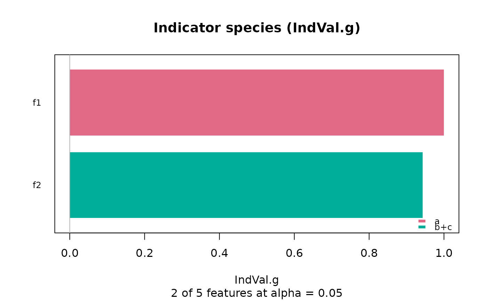

Finds the features (species, taxa) that characterise a group of samples,
or a combination of groups: found mostly in its samples (specificity)
and in most of them (fidelity). For each feature, the association with
every group and combination of groups is measured by the indicator value
(IndVal, Dufrêne & Legendre 1997) or a correlation index (De Cáceres &
Legendre 2009), the best one is kept, and a permutation test gives it a
p-value: De Cáceres, Legendre & Moretti's (2010) multilevel pattern
analysis. Gives the same results as indicspecies::multipatt(), but in
parallel C on sparse tables.
Arguments
- counts
A feature table, such as taxa abundances: a numeric matrix (samples in rows, or in columns with
margin = 2), a sparse matrix from Matrix or slam, or aphyloseq,rbiom, orSummarizedExperimentobject. Sparse tables are never made dense. Values must be non-negative. They are used as given: see Normalization.- groups
Each sample's group: a vector or factor with one value per sample, matched to the samples in
countsby name when both are named, else in the same order. Or, whendatais given, the name of one of its columns (or a vector with one value per row ofdata). There must be at least two groups. A factor's levels set the groups' order (unused levels are dropped); other values are sorted.- data
Sample metadata: a data frame with one row per sample, holding the columns named in
groupsorstrata. Rows are matched to the samples incountsby row name, and rows for other samples are ignored; without row names, they must be in the same order as the samples. Default:NULL.- margin
The margin containing samples.
1if samples are rows,2if samples are columns. Ignored whencountsis a special object class (e.g.phyloseq). Default:1- index
The association index:
'indval_g'(the default), the group-equalized indicator value;'indval', the indicator value without equalization;'r', the point-biserial correlation (the phi coefficient for presence-absence data); or'r_g', its group-equalized form.indicspecies' names ('IndVal.g','IndVal','r','r.g') are accepted too. See Indices.- min_order, max_order
The smallest and largest number of groups in a combination:
max_order = 1considers single groups only, as Dufrêne & Legendre (1997) did. Defaults:1andNULL, all the groups (for'r'and'r_g', all but one: see Combinations of groups).- combinations
The combinations of groups to consider, when not all of them make sense: a character vector of names, such as
c('a', 'b', 'a+b')(groups joined with"+"), or the combinations'combination_ids (see Value). Those outsidemin_ordertomax_orderare dropped. Default:NULL, all of them.- negative
For
'r'and'r_g'only: whether a negative association (a feature avoiding the combination's samples) can be the best one, by the absolute value of the index. Default:FALSE.- alpha
The significance level of the adjusted p-values:
rejectisp_adjusted <= alpha. Strictly between 0 and 1. Default:0.05.- p_adjust
How to adjust the p-values for testing every feature: any method of
stats::p.adjust()('holm', the default, as ecodive's DA methods;'BH','hochberg','hommel','bonferroni','BY','fdr', or'none', asindicspecies::multipatt()). Features without a p-value are left out of the family.- permutations
The number of permutations.
0skips the test, and givesNAp-values. Default:999. Alternatively, a matrix with one permutation of1:nper row, as frompermute::shuffleSet(), to use instead of random ones: sampleithen takes the group of samplepermutations[k, i], as inindicspecies::multipatt(permutations = ).- strata
Permute samples only within these groups (blocks), for designs such as repeated measures. With
data, the name of one of its columns, or a vector with one value per row ofdata. Withoutdata, a vector with one value per sample, matched to the samples by name when it has names, otherwise in the same order. Default:NULL(free permutation).- seed
An integer seed for the random permutations. The same seed gives the same p-values. Default:
0.- cpus
How many parallel processing threads should be used. The default,
n_cpus(), is the CPU cores this R process may use, within any limits set on it. Results are the same for anycpus.
Value
A data frame with one row per feature, in the order of counts,
of class c('ecodive_indicator_species', 'data.frame'), with columns:
feature: The feature's name (its column number, as text, whencountshas no feature names).combination: The group, or combination of groups, the feature is most associated with, as"a"or"a+b"(groups in their order).NAwhen no index is defined: for a feature absent from every sample, or (correlations) with the same value in every sample.combination_id: The combination's number among all \(2^K - 1\) combinations of the \(K\) groups, numbered asindicspeciesnumbers them: the single groups first, then the pairs, and so on, each size in the groups' order (with three groups: 1 = a, 2 = b, 3 = c, 4 = a+b, 5 = a+c, 6 = b+c, 7 = a+b+c). These are the idscombinationstakes.n_groups: How many groups the combination has.stat: The index for that combination (see Indices).a,b: For the indicator values, its two parts: the specificity \(A\) and the fidelity \(B\), withstat\(= \sqrt{A B}\).NAfor the correlation indices.p_value: The permutation p-value (see Permutation test).NAwhen the combination is all the groups (there are no other samples to compare with), withpermutations = 0, and wherecombinationisNA.p_adjusted:p_valueadjusted withp_adjust.reject:p_adjusted <= alpha(FALSEwhereNA).
Attributes: method ("indicator_species"), index, groups (the
groups, in order), combinations (the combinations considered: their
combination_ids, named by combination), alpha, p_adjust,
n_perm (the number of permutations), permutation ("free",
"within strata" or "supplied matrix"), and means (each group's
mean of each feature: a groups \(\times\) features matrix, for
plot()).
Details
Indices
For a feature with value \(a_i\) in sample \(i\), and a combination \(C\) of groups with \(n_C\) samples in all:
Specificity \(A\), the probability that a sample belongs to \(C\) given that it has the feature (De Cáceres' "positive predictive value").
'indval'estimates it from the abundances, \(A = \sum_{i \in C} a_i / \sum_i a_i\);'indval_g'from the groups' mean abundances \(\bar a_k\), so that every group weighs the same whatever its size, \(A_g = \sum_{k \in C} \bar a_k / \sum_k \bar a_k\).Fidelity \(B\), the probability of finding the feature in a sample of \(C\) (its "sensitivity"): the proportion of \(C\)'s samples that have it, \(B = \#\{i \in C : a_i > 0\} / n_C\).
The indicator value is \(\sqrt{A B}\), between 0 and 1: 1 for a feature found in every sample of \(C\) and nowhere else. (Dufrêne & Legendre's IndVal is \(A B\), which their equalized \(A\) makes
'indval_g'here;indicspeciesand ecodive report the square root.)'r'is the Pearson correlation between the feature's values and membership of \(C\) (1 in \(C\), 0 elsewhere): the point-biserial correlation, or the phi coefficient for presence-absence data.'r_g'is the same correlation with each sample weighted by one over its group's size, so that every group weighs the same (Tichý & Chytrý 2006). They range from -1 to 1.
The group-equalized indices ('indval_g', 'r_g') suit groups of
unequal sizes, and are the ones the indicspecies vignette recommends.
The indicator values measure how well a feature predicts the
combination (for identifying it in the field, or for monitoring); the
correlations measure a feature's preference for it over the other
samples, and can be negative (De Cáceres & Legendre 2009).
Combinations of groups
A feature found in two of three habitats is a poor indicator of either
one, but a good one of the pair. So every combination of groups is
considered (De Cáceres et al. 2010), within min_order to max_order
groups and combinations, and the one with the largest index is the
feature's combination. With negative = TRUE, the largest absolute
value: a correlation is negative for a combination when it is positive
for the other groups (the complement), by the same amount, so the
negative association with the complement ties the positive one, and the
tie goes to the combination of fewer groups. Values within a relative
\(10^{-12}\) of the largest are ties (for rounding), and ties go to
the combination of fewest groups, then to the first in the groups'
order. The combination of all the groups can be a feature's best for an
indicator value (a feature as common everywhere as anywhere), and is
then not tested; the correlations are undefined for it (there are no
other samples), so it is never considered for them. With many groups,
restrict the combinations (max_order): \(K\) groups have \(2^K -
1\), and more than \(2^{20}\) are refused.
Permutation test
The samples' groups are shuffled (only within strata, when given), and
the index computed again for every combination. As the best combination
was chosen as the largest of many, the test compares it with the largest
value over all the combinations considered in each permutation (the
largest absolute value, with negative = TRUE), as multipatt()
does. The p-value is \((1 + \#\{perm \ge obs\}) / (1 +
permutations)\), comparing the values exactly, as multipatt() does. A
permutation that leaves the best combination's samples in it gives
exactly the observed value, and counts.
Each feature is tested on its own, so the p-values need adjusting for
the number of features tested (p_adjust): multipatt() reports them
unadjusted, and its vignette warns about statements such as "the number
of indicator species is X" (De Cáceres & Legendre 2009; Legendre &
Legendre 2012).
Normalization
The specificity uses abundances, and the fidelity only presence. So the
results depend on how counts was normalized: give relative abundances
(normalize(counts, 'percent')) unless the samples' totals are
comparable, and remember that sequencing depth (and rarefaction) change
which samples have a rare feature, and so its fidelity.
Speed and memory
Each feature costs one pass over the samples that have it, plus a few
operations per combination, for the observed data and for each
permutation; nothing of the size of features \(\times\) combinations
is kept. Permutations run in parallel, in blocks of a fixed size, and
only integer counts are combined, so results are identical for any
cpus.
Differences from indicspecies::multipatt()
One row per feature, with the combination named (
"a+b") and itscombination_id, rather thanmultipatt()'s membership columns (s.a,s.b, ...) andindex.multipatt()'sindexis the combination's position among those considered, so it differs fromcombination_idwhenmin.orderorrestcombleaves out the first ones.combinationstakes names as well as ids;restcombtakes ids.duleg = TRUEismax_order = 1.p_adjustedandrejectare additions;p_adjust = 'none'givesmultipatt()'s p-values.Ties (and values within a relative \(10^{-5}\) of the largest) are broken at random by
multipatt(), so the same data can give a different combination from one run to the next; ecodive breaks them by the rule above, the same way every time.When the best combination is all the groups, the p-value is
NAhere, as inmultipatt()withoutrestcomb; withrestcomb,multipatt()tests it and gives 1.Random permutations come from ecodive's own generator (PCG, with
seed), so p-values differ frommultipatt()'s by sampling error; a suppliedpermutationsmatrix gives the same p-values.strataispermute::how(blocks = ).strassoc()'s other indices, its bootstrap confidence intervals, andindicators()(combinations of species as indicators) are not provided.
Same names in other packages
None: labdsv::indval() computes index = 'indval_g' with
max_order = 1, and indicspecies::multipatt() the whole analysis.
da_test() runs this function as "indicator_species", and also
as "indval" or "multipatt".
References
De Cáceres, M., & Legendre, P. (2009). Associations between species and groups of sites: indices and statistical inference. Ecology, 90, 3566-3574. doi:10.1890/08-1823.1
De Cáceres, M., Legendre, P., & Moretti, M. (2010). Improving indicator species analysis by combining groups of sites. Oikos, 119, 1674-1684. doi:10.1111/j.1600-0706.2010.18334.x
Dufrêne, M., & Legendre, P. (1997). Species assemblages and indicator species: the need for a flexible asymmetrical approach. Ecological Monographs, 67, 345-366. doi:10.1890/0012-9615(1997)067[0345:SAAIST]2.0.CO;2
Legendre, P., & Legendre, L. (2012). Numerical Ecology (3rd English ed.). Elsevier.
Tichý, L., & Chytrý, M. (2006). Statistical determination of diagnostic species for site groups of unequal size. Journal of Vegetation Science, 17, 809-818. doi:10.1111/j.1654-1103.2006.tb02504.x
Examples
# Three habitats; f1 lives in 'a', f2 in 'b' and 'c', f3 everywhere.
set.seed(1)
grp <- rep(c('a', 'b', 'c'), c(6, 8, 10))
x <- matrix(rpois(24 * 5, 2), 24, 5, dimnames = list(NULL, paste0('f', 1:5)))
x[grp != 'a', 1] <- 0
x[grp == 'a', 2] <- 0
x[, 3] <- x[, 3] + 1
res <- indicator_species(x, grp, cpus = 1)
res
#> # A data.frame: 5 × 10
#> # Indicator species (IndVal.g)
#> feature combination combination_id n_groups stat a b p_value
#> <chr> <chr> <int> <int> <dbl> <dbl> <dbl> <dbl>
#> 1 f1 a 1 1 1 1 1 0.001
#> 2 f2 b+c 6 2 0.943 1 0.889 0.001
#> 3 f3 a+b+c 7 3 1 1 1 NA
#> 4 f4 a+b+c 7 3 0.957 1 0.917 NA
#> 5 f5 a+b+c 7 3 0.935 1 0.875 NA
#> # … 2 more columns: p_adjusted <dbl>, reject <lgl>
#> # Attributes: method, index, groups, combinations, alpha, p_adjust, n_perm,
#> # permutation, means
# The original analysis of Dufrene & Legendre: single groups only.
indicator_species(x, grp, max_order = 1, cpus = 1)
#> # A data.frame: 5 × 10
#> # Indicator species (IndVal.g)
#> feature combination combination_id n_groups stat a b p_value
#> <chr> <chr> <int> <int> <dbl> <dbl> <dbl> <dbl>
#> 1 f1 a 1 1 1 1 1 0.001
#> 2 f2 c 3 1 0.697 0.54 0.9 0.03
#> 3 f3 a 1 1 0.627 0.393 1 0.216
#> 4 f4 b 2 1 0.612 0.375 1 0.586
#> 5 f5 a 1 1 0.57 0.325 1 0.895
#> # … 2 more columns: p_adjusted <dbl>, reject <lgl>
#> # Attributes: method, index, groups, combinations, alpha, p_adjust, n_perm,
#> # permutation, means
# Correlations, allowing negative associations.
indicator_species(x, grp, index = 'r_g', negative = TRUE, cpus = 1)
#> # A data.frame: 5 × 10
#> # Indicator species (r.g)
#> feature combination combination_id n_groups stat a b p_value
#> <chr> <chr> <int> <int> <dbl> <dbl> <dbl> <dbl>
#> 1 f1 a 1 1 0.796 NA NA 0.001
#> 2 f2 a 1 1 -0.79 NA NA 0.001
#> 3 f3 a 1 1 0.318 NA NA 0.308
#> 4 f4 c 3 1 -0.164 NA NA 0.771
#> 5 f5 b 2 1 0.103 NA NA 0.894
#> # … 2 more columns: p_adjusted <dbl>, reject <lgl>
#> # Attributes: method, index, groups, combinations, alpha, p_adjust, n_perm,
#> # permutation, means
plot(res)
